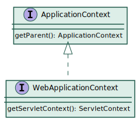
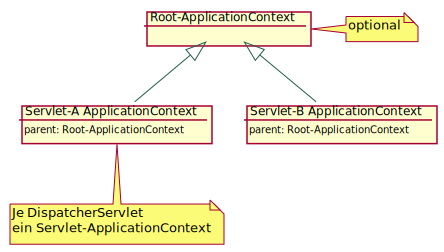

curl http://localhost:8080/tasks
REST
Was ist das?
REST Grundlagen
Steht für Representational State Transfer
Begriff: Doktorarbeit von Roy Fielding aus dem Jahr 2000
Technologie für Maschine zu Maschine Kommunikation
Fußt auf den Prinzipien des Web (Web für Maschinen)
Eine REST-API muss 5 Bedingungen erfüllen
1. Client-Server
Strikte Trennung der Systeme
Verbindung kann unterbrochen sein
2. Zustandslos
Keine Sitzungsinformation auf dem Server
(Andernfalls nur REST-artig)Zustand (Sitzung) wird auf Client vorgehalten
Nachrichten sind selbstbeschreibend
Jede Anfrage muss alle notwendigen Informationen enthalten, damit der Server diese verarbeiten kann (inkl. Sitzungsinformationen)
Jede Antwort muss alle Informationen enthalten, die der Client benötigt, um die Sitzung zu aktualisieren
3. Cachebar
Antworten müssen Informationen enthalten, ob und wie lange gecached werden kann
Client kann nicht davon Ausgehen, dass Antwort direkt vom Server kommt
4. Schichtenarchitektur
Zwischen Client und Server kann diverse Middleware liegen
⇒ Erhöht Skalierbarkeit und Ausfallsicherheit
5. Einheitliche Schnittstelle
Einhaltung der HTTP-Spezifikation
Ein Vertrag für alle Belange
Richtlinien der einheitlichen Schnittstelle:
Ressourcen basiert (URIs zur Identifizierung, repräsentationsunabhängig)
Bearbeitung der Ressourcen über deren Repräsentation
Selbstbeschreibende Nachrichten (jede Nachricht enthält explizt alles, was zu deren Verarbeitung notwendig ist, z. B. Typ, Cachbarkeit)
Hypermedia as the Engine of Application State (HATEOS)
HATEOAS
Client-Request enthält alle notwendigen Zustandsinformationen, die der Server benötigt, um den Request zu bearbeiten. Der Server weiß (speichert) nichts zu dem Client.
Der Server muss in seiner Antwort jeglichen Zustand an den Client übertragen, der für den nächsten Schritt notwendig ist.
Der Client übertägt die Zustandsinformation in Form von URLs, Request-Parametern, Request-Headern und dem Request-Inhalt (Body). Der Server überträgt Zustand mittels dem Inhalt der Antwort (Body), den Headern und dem Response-Code.
Daneben versteht man unter HATEOAS auch, dass Antworten im Inhalt oder im Header (Location, Link) die Links zu den zurückgegeben Objekten und ggf. zu weiterführenden Objekten enthalten.
6. Ausführbarer Code auf Anforderung (optional)
Server kann Funktionalität auf den Client übertragen (z. B. JavaScript-Code)
Resourcen basiert
Resourcen (Dinge) werden über URIs identifiziert
(es kann mehrere URIs geben, die auf die gleiche Ressource zeigen)Resourcen sind unabhängig von deren Repräsenation (verschiedene Repräsenationen möglich)
Aktionen werden über HTTP-Verben (GET, POST, PUT, DELETE) angegeben
Repräsenationen (JSON, XML, HTML, PDF, etc.) werden über den Content-Type (MIME) angegeben
⇒ URLs werden zum Adressieren von Ressourcen verwendet
| REST URLs | SOAP-RPC URLs |
|---|---|
Dinge | Aktionen |
Substantive | Verben |
Repräsentationen
Die Repräsentationen sind das, was tatsächlich zwischen Client und Server übertragen wird
Sie geben den Ressourcen Zustand (oder einen Teil davon) wieder
Umfassen neben Nutzdaten auch Metadaten (Typinformationen)
Typischerweise JSON oder XML, kann aber bliebiges Format sein (z. B. PDF, HTML, …)
Vorteile
Skalierbarkeit
Einfachheit
Wartbarkeit
Sichtbarkeit
Portierbarkeit
Zuverlässigkeit
HTTP Verben
GET | idempotent und sicher | Eine (Menge von) Ressource(n) über ihre URI abrufen |
|---|---|---|
POST | Erstellt eine Ressource | |
PUT | idempotent | Eine (Menge von) Ressource(n) anhand ihrer URI ändern (vollständig ersetzen) |
PATCH | Eine Ressource ändern (nur einzelne Attribute) | |
DELETE | idempotent | Entfernt eine Ressource anhand ihrer URI |
Richtlinien für REST-URIs
IDs sind immer Bestandteil der URL (Parameter nur zum Filtern)
Nur Substantive (Verben sind ein Bad Smell)
Plural
Nur Kleinbuchstaben und '-' zur Trennung
/users für eine Menge und /users/123 für einzelne Ressource
Beispiel: account/payment statt account/pay
Wichtigste HTTP Antwortcodes
200 OK | Erfolg (normale Antwort) |
201 CREATED | Erfolgreich erstellt (Antwort auf POST) |
204 NO CONTENT | Erfolg, aber kein Inhalt (Antwort auf DELETE) |
400 BAD REQUEST | Anfrage kann nicht verarbeitet werden (Validierungsfehler) |
401 UNAUTHORIZED | Notwendige Authentifizerung fehlt (z.B. kein Token vorhanden) |
403 FORBIDDEN | Berechtigung nicht ausreichend |
404 NOT FOUND | Ressource existiert nicht |
405 METHOD NOT ALLOWED | HTTP-Methode für die entsprechende URI nicht anwendbar |
409 CONFLICT | Bearbeitung der Anfrage würde zu Inkonsistenzen führen |
410 GONE | Die Ressource wurde gelöscht (wenn das bekannt ist, sonst 404) |
415 UNSUPPORTED MEDIA TYPE | Format der übertragenen Daten nicht untersützt |
500 INTERNAL SERVER ERROR | Unerwarteter Fehler auf Server |
Fragen?
Auch interessant:
JSON-API
Webanwendungen mit Java
Servlet API seit 1996 (aktuell: seit 2021 Jakarta Servlet 6.0 als Teil von JakartaEE 10)
Servlets können aus Java Server Pages (JSPs) erzeugt werden
Werden als WAR deployed
Ausführbar auf Servlet Container (z.B. Tomcat) oder Application Server (z.B. GlassFish)
Einfaches Servlet
public class HelloServlet extends HttpServlet {
@Override
protected void doGet(HttpServletRequest req, HttpServletResponse resp)
throws ServletException, IOException {
String name = req.getParameter("name");
resp.setContentType("text/plain");
resp.getWriter().println("Hello " + name + "!");
}
}Zugehörige WEB-INF/web.xml
<?xml version="1.0" encoding="UTF-8"?>
<web-app xmlns:xsi="http://www.w3.org/2001/XMLSchema-instance"
xmlns="http://xmlns.jcp.org/xml/ns/javaee"
xsi:schemaLocation="http://xmlns.jcp.org/xml/ns/javaee
http://xmlns.jcp.org/xml/ns/javaee/web-app_3_1.xsd"
version="3.1">
<servlet>
<servlet-name>Hello Servlet</servlet-name>
<servlet-class>hello.HelloServlet</servlet-class>
<load-on-startup>1</load-on-startup>
</servlet>
<servlet-mapping>
<servlet-name>Hello Servlet</servlet-name>
<url-pattern>/hello</url-pattern>
</servlet-mapping>
</web-app>Servlet ohne web.xml
@WebServlet(urlPatterns = "/hello", loadOnStartup = 1)
public class HelloServlet extends HttpServlet {
@Override
protected void doGet(HttpServletRequest req, HttpServletResponse resp)
throws ServletException, IOException {
String name = req.getParameter("name");
resp.setContentType("text/plain");
resp.getWriter().println("Hello " + name + "!");
}
}seit Servlet API 3.0
Spring Web-MVC
Web Framework, das auf Servlet API basiert
Setzt Model-View-Controller Pattern um
Verwendet zentrales
DispatcherServlet
Problem:
Das DispatcherServlet muss über den ApplicationContext konfigurierbar sein
ApplicationContext bei Web-Applikationen

WebApplicationContext

Kontext-Hierarchie

Initialisierung des DispatcherServlet
spring-web-5.3.6.jar!/META-INF/services/javax.servlet.ServletContainerInitializerwird von Servlet-Container geladen (→ Servlet-Spec 3.1, Abschnitt 8.2.4)
ist eine Textdatei, die auf einen Service Provider verweist
diese Textdatei enthält:
org.springframework.web.SpringServletContainerInitializerführt alle
org.springframework.web.WebApplicationInitializeraus, u. a. Subklassen von:
org.springframework.web.servlet.support.AbstractAnnotationConfigDispatcherServletInitializererzeugt
AnnotationConfigWebApplicationContextregistriert
DispatcherServletbeimServletContext
Beispiel für einen WebApplicationInitializer
HelloWebAppInitializer.java (lesson03-spring-rest)
public class HelloWebAppInitializer
extends AbstractAnnotationConfigDispatcherServletInitializer {
@Override
protected Class<?>[] getRootConfigClasses() {
// Config-Klassen für Root-ApplicationContext
return new Class[]{};
}
@Override
protected Class<?>[] getServletConfigClasses() {
// Config-Klassen für Servlet-ApplicationContext
return new Class[] {HelloConfig.class};
}
@Override
protected String[] getServletMappings() {
// Servlet-Mappings für das DispatcherServlet
return new String[] {"/"};
}
}DispatcherServlet bei REST-Service

Konfiguration ohne Spring-Boot
HelloConfig.java (lesson03-spring-rest)
@Configuration
@ComponentScan
@EnableWebMvc (1)
public class HelloConfig implements WebMvcConfigurer { (2)
}| 1 | Standardkonfiguration für MVC-Applikationen |
| 2 | Das WebMvcConfigurer Interface bietet viele Methoden zur Anpassung der Konfiguration |
REST mit Spring Web-MVC
REST-Endpunkte werden mit Controller-Klassen implementiert. Das sind normale Java-Klassen mit entsprechenden Annotationen:
HelloController.java (lesson03-spring-rest)
@RestController
public class HelloController {
@GetMapping(path="/hello", produces = "text/html")
public String hello(@RequestParam String name) {
return "Hello " + name + "!";
}
}Wichtige Annotationen für Controller
@Controllerbzw.@RestControllerMarkiert eine Klasse als Controller
@RestControllerist Meta-Annotation für@Controller+@ResponseBody@RequestMappingbzw.@GetMapping(analog fürPost,Put,DeleteundPatch)Markiert eine Methode als Request-Handler
@GetMappingist Meta-Annotation für@RequestMapping(method = RequestMethod.GET)@PathVariableEin
{variable}innerhalb eines Pfade definiert eine Variable und deren Wert mittels@PathVariableder Handler-Methode übergeben werden kann.
@GetMapping("/owners/{ownerId}/pets/{petId}")
public Pet findPet(@PathVariable Long ownerId, @PathVariable Long petId) { ... }@GetMapping(path = "/pets/{petId}", produces = "application/json;charset=UTF-8")
// statt "application/json;charset=UTF-8" geht auch org.springframework.http.MediaType.APPLICATION_JSON_UTF8_VALUERequest-Mapping
Die Zuordnung von Requests zu Handler-Methoden erfolgt über den
pathWert der entsprechenden@RequestMappingAnnotation.Neben den Platzhaltern von Path-Variablen
{var}können auch?,und*verwendet werden.Implizit wird
.*angehängt, so dass auf/personauch/person.pdfund/person.xmlpassen.Mit
paramsoderheaderkann zugleich noch auf das Vorhanden sein eines bestimmten Parameters bzw. Headers geprüft werden:@GetMapping(path = "/pets", params = "myParam")Parameter muss vorhanden sein@GetMapping(path = "/pets", params = "!myParam")Parameter darf nicht vorhanden sein@GetMapping(path = "/pets", params = "myParam=myValue")Parameter muss genau den angegeben Wert haben
REST-APIs testen
curl (über Git Bash aufrufbar)
Liste aller Tasks:
Einen Task hinzufügen:
curl -d '{"description": "curl lernen", "state":"STARTED", "dateDue":"2019-05-25T10:15:00Z"}' \
-H "Content-Type: application/json" -X POST http://localhost:8080/tasksTask löschen (mit -v werden u. a. Status-Code und Header ausgegeben):
curl -v -X DELETE http://localhost:8080/tasks/2
Alternativen:
Aufgabe 3: REST-Controller implementieren (Teil 1)
Implementieren Sie die fehlenden Methodenrümpfe (CRUD) im
TaskControllerund ergänzen Sie notwendige Annotationen.Starten Sie den Server und legen Sie manuell Daten über die REST-API an. Prüfen Sie auch den Datenbankinhalt.
Experimentieren Sie!
Weitere Annotationen für Parameter von Handler-Methoden
@RequestParam(default)@RequestHeader@CookieValue@SessionAttribute@RequestBody@PostMapping("/accounts") public void handle(@RequestBody Account account) { ... }@Valid(Standard Bean Validation)@PostMapping("/accounts") public void handle(@Valid @RequestBody Account account) { ... }
Optionale Handler-Methoden Parameter
HttpServletRequestHttpServletResponsejava.security.PrincipalLocaleTimeZoneoderZoneIdHttpEntity<B>(Zum Zugriff auf Header und Body)Errors,BindingResult(Zugriff auf Fehler bei Validierung oder Data Binding)UriComponentsBuilder(Um URLs relativ zur aktuellen URL zu erstellen)DemoController.java (lesson03-spring-rest)@GetMapping("/uri/{id}") public String uri(@PathVariable int id, UriComponentsBuilder uriBuilder) { String uri = uriBuilder.path("/uri/{id}").build().expand(id).encode().toUriString(); return uri; }
Handler-Methoden Rückgabewerte
Ein Handler kann beliebige Objekte zurückgeben, die mittels Data-Binding in den entsprechenden content_type konvertiert werden.
@ResponseBody(in@RestControllerenthalten)@GetMapping(path="/json", produces = MediaType.APPLICATION_JSON_UTF8_VALUE)(content_type angeben)@ResponseStatus(HttpStatus.CREATED)(default istHttpStatus.OK)ResponseEntity<B>(bietet fluent-API für Status, Header, Body, Cache-Control, etc.)return ResponseEntity.status(status).body(body);
Error Handling
Exception annotieren (Message ist fix):
BadException.java (lesson03-spring-rest)@ResponseStatus(code = HttpStatus.BAD_REQUEST, reason="Sample Exception") public class BadException extends RuntimeException { }ResponseStatusException (seit Spring 5):
throw new ResponseStatusException(HttpStatus.NOT_ACCEPTABLE, "Easy aufgrufen mit name=" + name);Handler-Methode im Controller für die entsprechenden Exceptions:
DemoController.java (lesson03-spring-rest)@ExceptionHandler({ WorseException.class }) public ResponseEntity<RestApiError> handleWorse(WorseException ex) { HttpStatus status = HttpStatus.GONE; RestApiError body = new RestApiError(status.value(), ex.getMessage()); return ResponseEntity.status(status).body(body); }
Zentralisierte Fehlerbehandlung mit @ControllerAdvice
RestExceptionHandler.java (lesson03-spring-rest)
@ControllerAdvice
public class RestExceptionHandler extends ResponseEntityExceptionHandler {
@ExceptionHandler(WorstException.class)
@ResponseStatus(HttpStatus.CONFLICT)
@ResponseBody
public RestApiError handleWorst(WorstException ex) {
logger.warn("Worst: " + ex.getMessage());
return error(HttpStatus.CONFLICT, ex);
}
@ExceptionHandler({ NullPointerException.class, IllegalArgumentException.class, IllegalStateException.class })
public ResponseEntity<Object> handleIntenalServerError(RuntimeException ex, WebRequest request) {
logger.error("Internal Server Error", ex);
HttpStatus status = HttpStatus.INTERNAL_SERVER_ERROR;
RestApiError error = error(status, ex);
return handleExceptionInternal(ex, error, new HttpHeaders(), status, request);
}
private RestApiError error(HttpStatus httpStatus, Exception ex) {
String message = ex.getMessage() == null ? ex.getClass().getSimpleName() : ex.getMessage();
return new RestApiError(httpStatus.value(), message);
}
}Unit-Tests
Test mit MockMvc
TaskControllerTest.java
@SpringBootTest("spring.datasource.url=")
@AutoConfigureMockMvc
@Disabled("Implement TaskController first")
public class TaskControllerTest {
@Autowired
private MockMvc mockMvc;
@Test
public void testEmptyRepository() throws Exception {
mockMvc.perform(get("/tasks/")).andDo(print()).andExpect(status().isOk()).andExpect(content().json("[]"));
}
}Test mit TestRestTemplate
TaskControllerHttpRequestTest.java
@SpringBootTest(properties = "spring.datasource.url=", webEnvironment = SpringBootTest.WebEnvironment.RANDOM_PORT)
public class TaskControllerHttpRequestTest {
@LocalServerPort
private int port;
@Autowired
private TestRestTemplate restTemplate;
@Test
public void testGet() throws Exception {
TaskEntity task = restTemplate.getForObject("http://localhost:" + port + "/tasks/42", TaskEntity.class);
}
}Aufgabe 4: REST-Controller implementieren (Teil 2)
Lösen Sie die restlichen TODOs (Error Handling, Location Header) im
TaskController.Führen Sie die Tests
TaskControllerTest,TaskControllerHttpRequestTestundTaskControllerMockTestaus. Worin unterscheiden sich diese?Debuggen Sie Ihre Anwendung. Wer ruft die Controller-Methoden auf? Was genau geschieht im DispatcherServlet?
REST
Fragen?